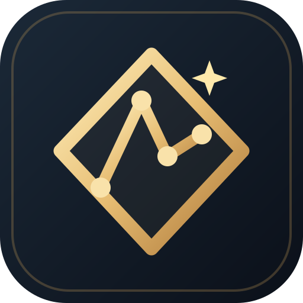

Vektör odaklı
Renk katmanlarını SVG yollarına dönüştürerek yeniden boyutlandırılabilir çizimler oluşturur.

GoldenTraceCREATIVE TOOLSGörsellerinizi birkaç tıklamayla ölçeklenebilir SVG çalışmalarına dönüştürün. Modern kontroller, anlık önizleme ve tamamen tarayıcınızda çalışan güvenli bir deneyim.
Görsel yükleyin, ayrıntıları seçin ve SVG olarak dışa aktarın.
Yüklediğiniz görsel burada görünecek.
Renk katmanlarını SVG yollarına dönüştürerek yeniden boyutlandırılabilir çizimler oluşturur.
Görseller cihazınızda işlenir; dönüştürme için bir sunucuya yüklenmez.
PWA desteğiyle aracı desteklenen cihazlarda ana ekrana ekleyip çevrimdışı kullanabilirsiniz.
Gerçek vektör modu, renkleri sadeleştirerek şekillerden oluşan SVG yolları üretir. Orijinal renkler modu, fotoğrafı SVG kapsayıcısına gömer: renkler korunur ancak görüntü vektörleşmez.
Fotoğraflar çok sayıda ton içerir. SVG izleme, seçilen renk sayısına göre tonları gruplandırır. Logo, ikon ve illüstrasyonlarda daha başarılı sonuçlar elde edilir.
Hayır. Görsel okuma, dönüştürme ve indirme doğrudan tarayıcınızda gerçekleşir.
Evet, bu dönüştürücü ücretsiz kullanılabilir ve üyelik gerektirmez.